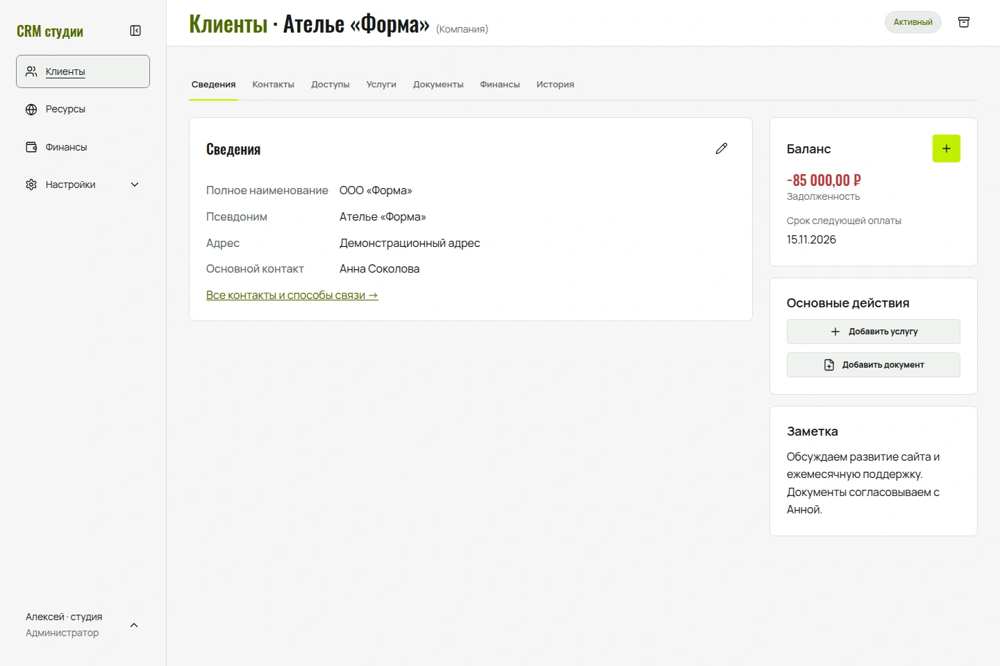
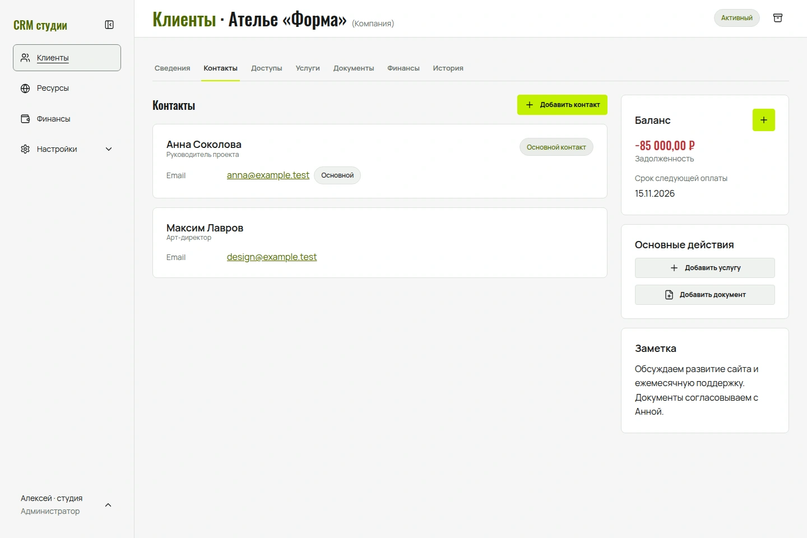
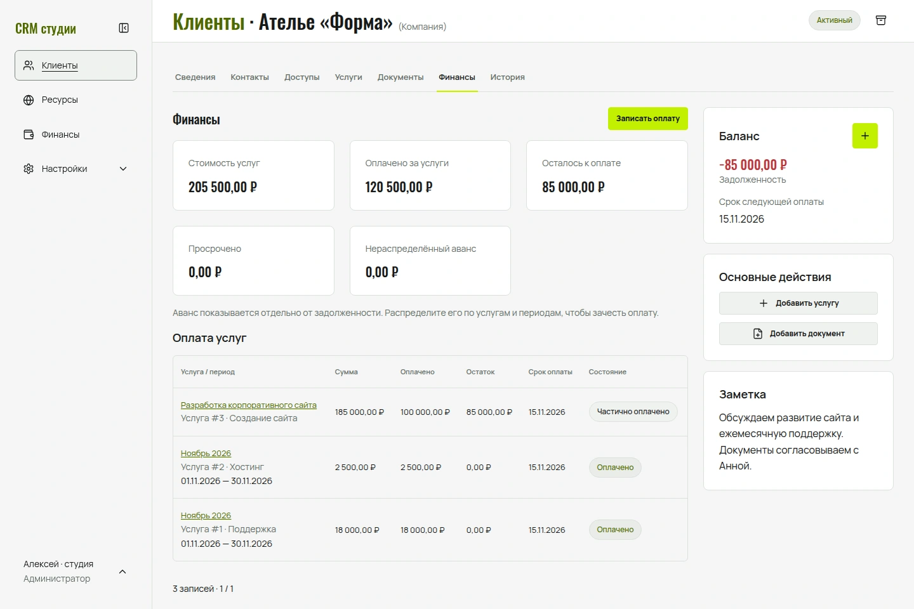
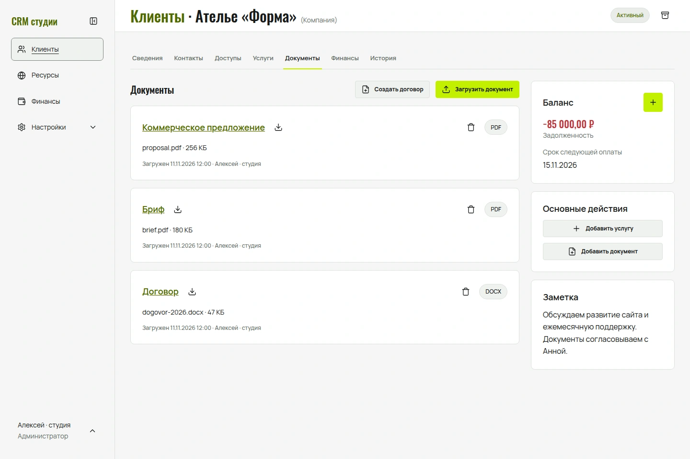

Сохранить контекст
Контакты, договорённости и документы привязаны к одному клиенту.
Веб-приложение / UX · UI · Разработка / 2026
От первого контакта до следующей оплаты. Рабочее пространство для клиентов, услуг, финансов и документов веб-студии.
Рассмотреть проект01 / Контекст и задача
Веб-студия не только создаёт сайты. Она поддерживает их, оплачивает ресурсы и возвращается к клиенту каждый месяц.
CRM спроектирована вокруг этих отношений: кто отвечает со стороны клиента, какие услуги подключены, сколько оплачено и когда наступит следующий срок.
Задача — собрать эту информацию в связанную систему с понятным маршрутом от клиента к услуге, оплате и документу.
Контакты, договорённости и документы привязаны к одному клиенту.
Разовая разработка и ежемесячная поддержка живут в одной модели услуг.
Стоимость, оплаты, остатки и сроки видны рядом с конкретной услугой.
02 / Клиентская база
Список отвечает на повседневные вопросы: кто клиент, с кем связаться, какие услуги подключены и когда ждать оплату.
Поиск по названию, ИНН, контакту или телефону. Фильтры помогают выделить нужное состояние и оплату.
Ближайшая оплата и следующий платёж вынесены в отдельные колонки. Список остаётся рабочим инструментом.
03 / Карточка клиента
Сведения, контакты, доступы, услуги, документы, финансы и история — семь разделов одной карточки.
Баланс, ближайший срок и основные действия остаются в боковой колонке. При переходе между разделами финансовый контекст остаётся перед глазами.


Контакт Услуга Оплата Документ
04 / Услуги и периодические платежи
В карточке услуги встречаются два независимых состояния: этап работы и оплата. Разработка может продолжаться, даже если платёж уже поступил.
Этап описывает работу, статус оплаты — расчёты. Текст сохраняет смысл без опоры на цвет.
Разовая стоимость, периодическое начисление, предоплата и остаток учитываются в модели услуг.
Название открывает редактор, плашка этапа — выбор этапа, статус оплаты — запись платежа.
После сохранения окно закрывается, а данные обновляются с сохранением текущей вкладки, фильтров и прокрутки.
05 / Финансы и документы
Сумма платежа связана с услугой, документ — с клиентом, договор — с реквизитами и выбранными условиями.
Финансы разделяют долг и нераспределённый аванс. Документы можно загружать, просматривать и скачивать; договоры — создавать по DOCX-шаблонам.


Поступления, распределение, предоплаты, возвраты и корректировки отражаются в финансовом модуле.
Генерация подставляет реквизиты и услуги. Снимок использованных данных сохраняется вместе с готовым DOCX.
06 / Визуальная система
Brand UI 1.0.5 объединяет все модули: нейтральные поверхности, лайм для главных действий и семантические цвета состояний.
Заголовки / Навигационные ориентиры
Интерфейс / Данные / Основной текст
Общие кнопки, поля, таблицы, карточки, вкладки и диалоги сохраняют единое поведение между модулями.
Светлая и тёмная темы используют семантические токены. Состояния и приоритет действий сохраняются в обеих.
07 / Адаптивность
На узком экране навигация уходит в боковое меню, колонки выстраиваются последовательно, а карточки сохраняют читаемые названия и статусы.
08 / Результат
Реализована CRM с серверной логикой, связанными модулями и единым интерфейсом.
Кейс показывает реализованные возможности проекта. Экраны подготовлены на вымышленных данных; показатели роста и экономии времени не заявляются.
Контакты, услуги, финансы, документы и история собраны в одной карточке.
Разовые и периодические услуги, индивидуальная стоимость и автоматические начисления по периодам.
Серверные формы, модальные редакторы, обновление данных без перезагрузки и генерация договоров.
Общая дизайн-система, роли сотрудников, журнал изменений и зашифрованные резервные копии.
Состояние проекта: локальная реализация. Дальнейшие направления — расходы поставщиков и интеграции через API.
CRM студии / 2026
Клиенты, услуги, финансы и документы.
Одно пространство для ежедневной работы.